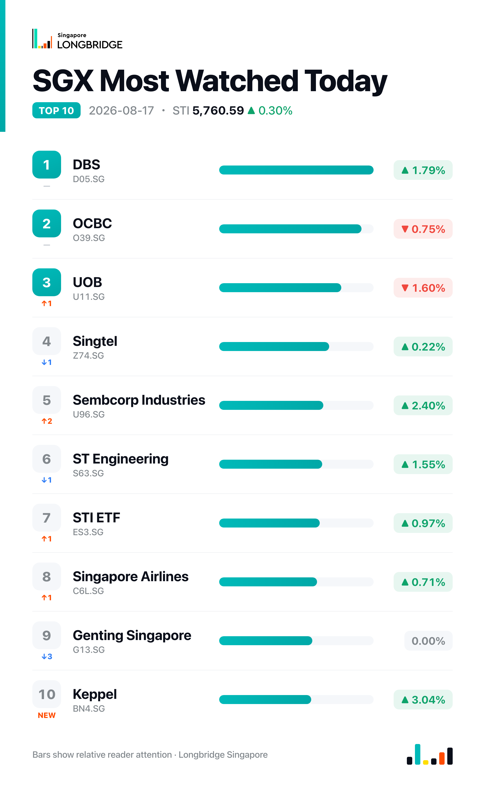

STI Adds 0.30% to 5,760.59 as Keppel, Sembcorp Industries Lead; DBS Diverges as OCBC, UOB Slip
The Straits Times Index closed at 5,760.59 on Monday, up 17.0 points, or 0.30%, after trading between an intraday low of 5,679.10 and a high of 5,761.97, finishing near the session's high. Advancers led decliners 13 to 10 among the benchmark's 30 constituents, with seven unchanged, as energy and infrastructure-linked names outpaced a divided banking sector.
The advance centred on company-specific catalysts rather than a single macro trigger. Keppel and Sembcorp Industries, both tied to fresh updates on asset monetisation and overseas expansion, led the gainers alongside Yangzijiang Shipbuilding, up 1.95%. The three local banks split for a second straight session, this time in the opposite direction from Friday: DBS advanced 1.79% while OCBC fell 0.75% and UOB fell 1.6%, reversing the pattern in which OCBC and UOB had led and DBS had lagged. Breadth aligned with the index's direction for the fourth time in the past five sessions, following similar alignment on Aug. 11, 12 and 14; only Aug. 13 broke the pattern, when just six stocks advanced against nineteen decliners even as the index closed roughly flat.
Session Movers
Keppel (BN4.SG, +3.04%) rose after an Aug. 13 investor presentation set a target of US$200 billion in funds under management by end-2030, up from US$106 billion in July, alongside a US$29 billion infrastructure deal-flow pipeline and a US$2.1 billion pipeline for monetising legacy rigs; first-half 2026 net profit reached US$530 million on a 15% annualised ROE. The stock also carries an Aug. 11 catalyst, after its Kruger Holdings unit secured an IMDA facilities-based operator licence for a subsea cable system linking Singapore, Malaysia, Bangladesh, India and Oman with a landing at Tuas, targeting a final investment decision by end-2026. Keppel trades at 1.86 times book value, within its five-year range, with a consensus Buy rating and an S$12.74 target implying about 11% upside.
Sembcorp Industries (U96.SG, +2.4%) advanced on news that its Indian renewable-energy subsidiary, Sembcorp Green Infra, is preparing to list in India and raise about $500 million, backed by Temasek and working with several investment banks toward a possible draft filing as early as this month — its second attempt at an India listing. CGS International reaffirmed a Buy rating on the stock on Aug. 15 with an S$7.15 target. The consensus rating stands at Buy with an S$6.63 target, about 11% above the current price.
DBS (D05.SG, +1.79%) rose after its Hong Kong unit reported interim results on Aug. 15 showing revenue up 14% year-on-year to HK$11.9 billion and net profit up 23% to a record HK$6.3 billion, with wealth management revenue surging 38%; the unit said mainland clients account for less than 30% of assets under management, limiting the impact of Beijing's crackdown on illegal cross-border capital flows. The gain lifted DBS to S$76.88, above the S$75.38 consensus target price set just a day earlier on Aug. 16.
Wilmar (F34.SG, -2.13%) fell despite reporting on Aug. 14 that first-half net profit rose 2.3% to $779.4 million on a 17.2% revenue increase to $49.36 billion, driven by the AWL Agri Business consolidation; Feed & Industrial pre-tax profit surged 55% and Food Products profit rose 56%, while Plantation & Sugar Milling profit fell 32% on weak sugar prices and impairments. The company also approved a $0.05-per-share interim dividend. Shares have drifted lower since the results, with thin trailing net margins of around 1.9% cited as a persistent overhang.

One point worth noting
DBS's advance carried the stock to S$76.88, above the S$75.38 consensus target price analysts had set just a day earlier, meaning the rally has pushed the most closely-watched of the three banks past where its own coverage expects it to trade. That marks a reversal from Friday, when DBS was the laggard among the banks while OCBC and UOB led; it is now the one trading richest relative to consensus.
This recap is for informational purposes only and does not constitute investment advice.